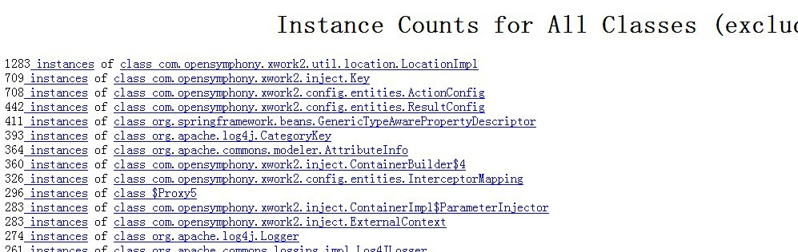

命令行窗口键入：C:\Documents and Settings\Administrator\jhat eclipse.bin ,显示Server is ready后，

打开浏览器，输入http://localhost:7000后就可以看到分析日志了
在eclipse中启动一个java类，打开jdk安装目录下的C:\Program
Files\Java\jdk1.6.0_11\bin目录，双击jconsole.exe，显示连接窗口：
，单击pid为6920的选项，点连接进入，可以看到jvm运行时的多种参数，
在运行中输入cmd，在命令行中输入以下命令
C:\DocumentsandSettings\Administrator\jmap -dump:format=b,file=eclipse.bin 6920 ,6920为java进程的pid，回车，显示heap dump file created
命令行窗口键入：C:\Documents
and Settings\Administrator\jhat eclipse.bin ,显示Server is ready后，
打开浏览器，输入http://localhost:7000后就可以看到分析日志了
拉到页尾，点击Other
Queries标题下的Show instance counts for all classes (excluding platform)
，所有类的数目按照数目排序：

，点击Other
Queries标题下的Execute Object Query Language (OQL) query 可以根据OQL语言来查询自己想要的信息：
在其中输入
select file.path.value.toString() from java.io.File file
可以查询所有加载的文件：
，更多查询方法可以参考OQL的语法。